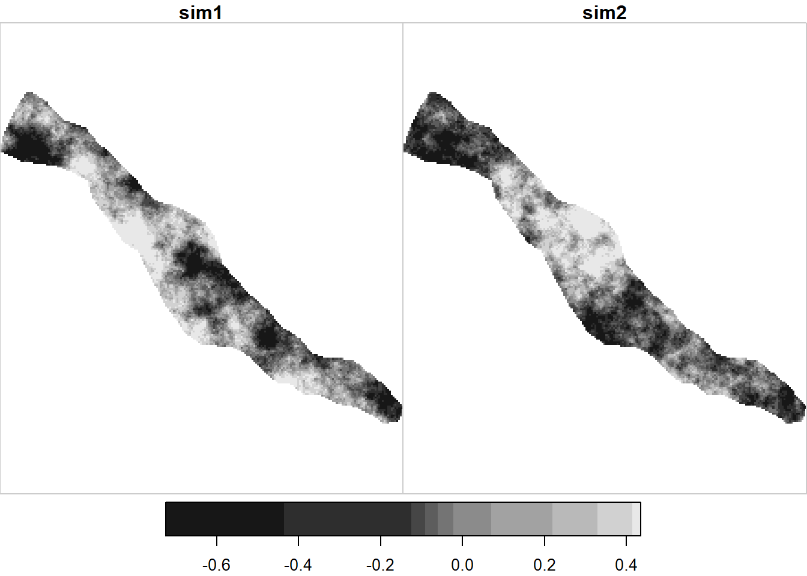

Chapter 4 Simple kriging just in space
test_data <- pick_pts_13 %>% filter(trip == 2)
# create x y trend model and pull residuals to krige
test_data$x <- st_coordinates(test_data) %>% as.data.frame() %>% pull(X)
test_data$y <- st_coordinates(test_data) %>% as.data.frame() %>% pull(Y)
func_trend <- as.formula(flux_co2_g_hr ~ x + y)
lm_trend <- lm(func_trend, data = test_data)
summary(lm_trend)##
## Call:
## lm(formula = func_trend, data = test_data)
##
## Residuals:
## Min 1Q Median 3Q Max
## -0.52583 -0.10096 -0.02899 0.21436 0.41754
##
## Coefficients:
## Estimate Std. Error t value Pr(>|t|)
## (Intercept) 4.815e+04 3.024e+04 1.593 0.1457
## x -1.999e-02 7.032e-03 -2.842 0.0193 *
## y -1.130e-02 7.539e-03 -1.499 0.1680
## ---
## Signif. codes: 0 '***' 0.001 '**' 0.01 '*' 0.05 '.' 0.1 ' ' 1
##
## Residual standard error: 0.3229 on 9 degrees of freedom
## Multiple R-squared: 0.7654, Adjusted R-squared: 0.7132
## F-statistic: 14.68 on 2 and 9 DF, p-value: 0.001468test_data$resid_co2_g_hr <- residuals(lm_trend)
hist(test_data$resid_co2_g_hr)
# function to return table with normal scores and original values to use for backtransform later
nscore <- function(x) {
nscore <- qqnorm(x, plot.it = FALSE)$x # normal score
trn.table <- data.frame(x=sort(x),nscore=sort(nscore))
return (trn.table)
}
# quantile-quantile normal score transform data
test_data$resid_norm_co2_g_hr <- qqnorm(test_data$resid_co2_g_hr, plot.it = F)$x
nscore.tab <- nscore(test_data$resid_co2_g_hr)
plot(x~nscore, data=nscore.tab)
plot(ecdf(test_data$resid_co2_g_hr))
plot(ecdf(test_data$resid_norm_co2_g_hr))
hist(test_data$resid_co2_g_hr)
hist(test_data$resid_norm_co2_g_hr)
tm_shape(pick)+
tm_polygons(col = "white")+
tm_shape(test_data)+
tm_dots("resid_norm_co2_g_hr", size = 0.5, shape = 21, palette = "-RdYlBu", midpoint = NA, title = "Normalized CO2 residual (g/m2/hr)")
# create isotropic variogram
# width = lag distance (approximately minimum non zero data spacing)
# cutoff = number of lags * lag distance (number of lags = 1/2 major axis/lag distance)
# think about how cutoff and width parameters are impacting variogram calculation
var.norm.iso <- variogram(resid_norm_co2_g_hr~1, test_data ,cutoff = 70 ,width = 14)
var.norm.th.iso <- vgm(psill = 1, "Exp", range = 17) # no nugget
# plot theoretical with experimental variogram
vm.norm.sim <- variogramLine(var.norm.th.iso,maxdist=100,min=0.0001,n=100, covariance=FALSE)
plot(var.norm.iso$dist,var.norm.iso$gamma, xlim = c(0,100))
lines(vm.norm.sim$dist,vm.norm.sim$gamma,col="blue") 
# create anisotropic variogram (doesn't appear to be enough data to do this/not well supported with residuals of gaussian transformed model)
var.norm.045 = variogram(resid_norm_co2_g_hr~1,test_data,cutoff = 70,width =14,alpha = 45.0,tol.hor=22.5) # 045 directional
var.norm.135 = variogram(resid_norm_co2_g_hr~1,test_data,cutoff = 70,width =14,alpha = 135.0,tol.hor=22.5) # 135 directional
var.norm.th.ani<- vgm(psill = 1, "Exp", 17, anis = c(135, 0.5))
# plot theoretical anisotropic variograms with experimental variograms
unit_vector = c(sin(45*pi/180),sin(45*pi/180),0) # unit vector for 035 azimuth
vm.norm.sim.an.45 <- variogramLine(var.norm.th.ani, maxdist=100,min=0.0001,n=100, covariance=FALSE, dir=unit_vector)
unit_vector = c(sin(45*pi/180),-sin(45*pi/180),0) # unit vector for 035 azimuth
vm.norm.sim.an.135 <- variogramLine(var.norm.th.ani, maxdist=100,min=0.0001,n=100, covariance=FALSE, dir=unit_vector)
plot(var.norm.135$dist, var.norm.135$gamma, col = "green", pch=16)
points(var.norm.045$dist, var.norm.045$gamma, col = "red", pch=16)
lines(vm.norm.sim.an.45$dist, vm.norm.sim.an.45$gamma, col ="red")
lines(vm.norm.sim.an.135$dist, vm.norm.sim.an.135$gamma, col ="green")# create interpolation grid
grid <- st_as_stars(st_bbox(pick), dx = 1, dy = 1)
grid <- grid[pick]
# ordinary kriging (assumption of stationarity of the mean is relaxed, mean is estimated locally)
co2.kriged = krige(resid_norm_co2_g_hr~1, test_data, grid, model = var.norm.th.iso,maxdist = Inf,nmin = 0,omax=Inf) ## Warning in predict.gstat(g, newdata = newdata, block = block, nsim = nsim, : NAs introduced by coercion to integer range## [using ordinary kriging]# simple kriging (mean is stationary)
co2.kriged.sk = krige(resid_norm_co2_g_hr~1, test_data, grid, model = var.norm.th.iso,maxdist = Inf,nmin = 0,omax=Inf, beta = mean(test_data$resid_norm_co2_g_hr)) ## Warning in predict.gstat(g, newdata = newdata, block = block, nsim = nsim, : NAs introduced by coercion to integer range## [using simple kriging]# ordinary and simple kriging (yield very similar results in this example)
range(co2.kriged$var1.pred, na.rm = T)## [1] -1.676307 1.670763range(co2.kriged.sk$var1.pred, na.rm = T)## [1] -1.675864 1.670890plot(co2.kriged.sk)
# backtransform normal scores
# based on the gslib documentation, it looks like what you need to do is for each point interpolate between points in the normal score table and use an extrapolation function (possibly linear?) for points beyond the range
above.max.lm <- lm(x~nscore, data=nscore.tab[(nrow(nscore.tab)-1):nrow(nscore.tab),])
above.max.func <- function(x){
coefficients(above.max.lm)[[1]] + (coefficients(above.max.lm)[[2]]*x)
}
below.min.lm <- lm(x~nscore, data=nscore.tab[1:2,])
below.min.func <- function(x){
coefficients(below.min.lm)[[1]] + (coefficients(below.min.lm)[[2]]*x)
}
interpolate <- approxfun(x=nscore.tab$nscore, y=nscore.tab$x)
backtr <- function(x){
if(is.na(x)){
return(NA)
}
if(x>max(nscore.tab$nscore)){
return(above.max.func(x))
}
if(x<min(nscore.tab$nscore)){
return(below.min.func(x))
}
else{
return(interpolate(x))
}
}
co2.kriged.sk$backtransformed <- apply(co2.kriged.sk$var1.pred, 1:2, backtr)
# add back in the trend to the kriged backtransformed residuals
co2.kriged.sk$trend <- predict(co2.kriged.sk[3], lm_trend)
co2.kriged.sk$detrended <- co2.kriged.sk$trend + co2.kriged.sk$backtransformed# Sequential Gaussian simulation with isotropic variogram using simple kriging (but ordinary kriging also run)
# Ortiz 2020 https://qspace.library.queensu.ca/bitstream/handle/1974/28538/2020-01-Ortiz-Simulation.pdf?sequence=2 indicates that you shouldn't use ordinary kriging in sequential gaussian simulation. The krige function I think allows you to use ordinary kriging and it looks like it might be trying to estimate beta within the function.
# co2.kriged.sim = krige(resid_norm_co2_g_hr~1, test_data, grid, model = var.norm.th.iso,maxdist = Inf,nmin = 0,omax=Inf, indicators=FALSE, nsim=2, nmax=100) # will take a second to run
co2.kriged.sim.sk = krige(resid_norm_co2_g_hr~1, test_data, grid, model = var.norm.th.iso,maxdist = Inf,nmin = 0,omax=Inf, indicators=FALSE, nsim=2, nmax=100, beta = 0) # will take a second to run # mean should be zero after gaussian transformation # I don't know if beta is required here## Warning in predict.gstat(g, newdata = newdata, block = block, nsim = nsim, : NAs introduced by coercion to integer range## [using conditional Gaussian simulation]co2.kriged.sim.sk$backtransform <- st_apply(co2.kriged.sim.sk[1], 1:3, backtr)
str(co2.kriged.sim.sk)## List of 2
## $ var1 : num [1:220, 1:182, 1:2] NA NA NA NA NA NA NA NA NA NA ...
## ..- attr(*, "names")= chr [1:80080] "sim11" "sim12" "sim13" "sim14" ...
## $ backtransform: num [1:220, 1:182, 1:2] NA NA NA NA NA NA NA NA NA NA ...
## - attr(*, "dimensions")=List of 3
## ..$ x :List of 7
## .. ..$ from : num 1
## .. ..$ to : int 220
## .. ..$ offset: num 287504
## .. ..$ delta : num 1
## .. ..$ refsys:List of 2
## .. .. ..$ input: chr "EPSG:32617"
## .. .. ..$ wkt : chr "PROJCRS[\"WGS 84 / UTM zone 17N\",\n BASEGEOGCRS[\"WGS 84\",\n ENSEMBLE[\"World Geodetic System 1984 "| __truncated__
## .. .. ..- attr(*, "class")= chr "crs"
## .. ..$ point : logi NA
## .. ..$ values: NULL
## .. ..- attr(*, "class")= chr "dimension"
## ..$ y :List of 7
## .. ..$ from : num 1
## .. ..$ to : int 182
## .. ..$ offset: num 3752091
## .. ..$ delta : num -1
## .. ..$ refsys:List of 2
## .. .. ..$ input: chr "EPSG:32617"
## .. .. ..$ wkt : chr "PROJCRS[\"WGS 84 / UTM zone 17N\",\n BASEGEOGCRS[\"WGS 84\",\n ENSEMBLE[\"World Geodetic System 1984 "| __truncated__
## .. .. ..- attr(*, "class")= chr "crs"
## .. ..$ point : logi NA
## .. ..$ values: NULL
## .. ..- attr(*, "class")= chr "dimension"
## ..$ sample:List of 7
## .. ..$ from : num 1
## .. ..$ to : int 2
## .. ..$ offset: num NA
## .. ..$ delta : num NA
## .. ..$ refsys: chr NA
## .. ..$ point : logi NA
## .. ..$ values: chr [1:2] "sim1" "sim2"
## .. ..- attr(*, "class")= chr "dimension"
## ..- attr(*, "raster")=List of 4
## .. ..$ affine : num [1:2] 0 0
## .. ..$ dimensions : chr [1:2] "x" "y"
## .. ..$ curvilinear: logi FALSE
## .. ..$ blocksizes : NULL
## .. ..- attr(*, "class")= chr "stars_raster"
## ..- attr(*, "class")= chr "dimensions"
## - attr(*, "class")= chr "stars"plot(co2.kriged.sim.sk[1])
plot(co2.kriged.sim.sk[2])
co2.kriged.sim.sk$trend <- predict(co2.kriged.sim.sk[2], lm_trend)
co2.kriged.sim.sk$detrended <- co2.kriged.sim.sk[2] + co2.kriged.sim.sk[3]
plot(co2.kriged.sim.sk[4])
# total CO2 flux estimate (in grams) from simulations
sum(co2.kriged.sim.sk[4,,,1]$detrended, na.rm = T)## [1] 506.5057sum(co2.kriged.sim.sk[4,,,2]$detrended, na.rm = T)## [1] 168.5491# total CO2 flux estimate using only the mean of measured data values
st_area(pick) %>% as.numeric()*mean(test_data$flux_co2_g_hr)## [1] 702.4269